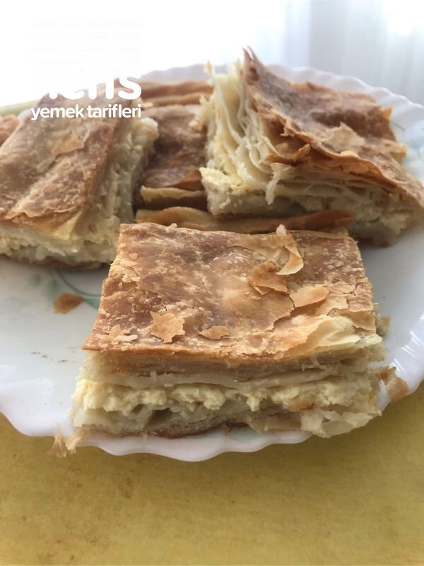

🍽️ 10-12 kişilik⏱️ Hazırlık: 40 dk🔥 Pişirme: 35 dk🏷️ Hamur İşi Tarifleri🏷️ Börek Tarifleri
Malzemeler
- Un
- 2,5 su bardağı su
- 1 yemek kaşığı tuz
- 1 kase zeytinyağı
- 1 kg koyu kıvamlı yoğurt
- 4-5 yumurta
- 2 kaşık zeytinyağı
- Tuz
- Tepsiyi yağlamak için katı margarin veya tereyağ
Hazırlanışı
- Yoğurdun içine yumurtalarımızı kırıp, tuz ve yağ ekleyerek çırpıyoruz. ( böreği yapasaya oda sıcaklığına gelmesi için).
- 2,5 bardak su ve bir yemek kaşığı tuz ile hamuru hazırlıyoruz.
- 40 bezeye bölüyoruz, ve bezeleri yuvarlıyoruz.
- İlk yuvarladıklarımızdan başlayarak küçük pasta tabağı kadar açıyoruz.
- 20 bezeyi aralarına yağ sürerek ( 1 yemek kaşığından biraz az) üst üste koyuyoruz( en üste yağ sürmüyoruz).
- Diğer 20 bezeyi de aynı şekilde hazırlıyoruz.
- İlk hazırladığımız yirmili bezeyi alıyoruz.
- Tepsi büyüklüğünden biraz fazla açıyoruz. (yoğurtlu malzeme koyacağımız için kenarlarından tepsiye yoğurt akmaması için tepsiden büyük olacak).
- Tepsiyi ve tepsinin kenarlarını katı margarinle (tereyağ) yağlıyoruz ki hamur yoğurt koyunca toplanmasın.
- Diğer yirmili bezeyi de açtıktan sonra( tepsi büyüklüğünden biraz fazla) fırınımızı açıp ısıtıyoruz( 200 derece).
- Hazırladığımız yoğurtlu karışımı tepsiye döküp homojen dağıtıyoruz.
- Üst yufkayı da üzerine koyup kenarlarını kıvırıyoruz.
- Üzerine sıvı yağ sürüp sıcak fırında üzeri kızarana kadar pişiriyoruz.
- Böreğimiz piştikten sonra bir süre dinlendirip öyle kesip servis yapıyoruz. Nefis böreğimiz hazır. Afiyet olsun 😊.